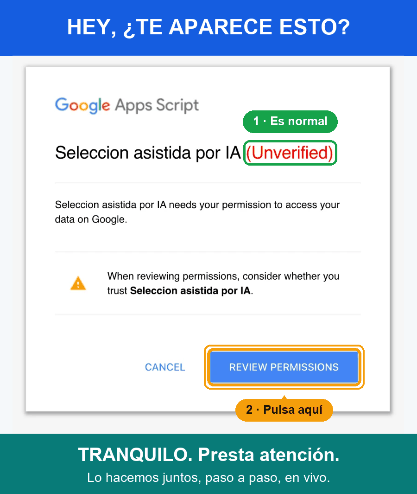

Usa tu propia cuenta
Abre la herramienta e inicia sesión en Google. Revisa los permisos solicitados y las políticas de tu institución.
Para cualquier necesidad de contratación de personal: define el cargo, compara perfiles, revisa sugerencias de IA y entrega un informe con trazabilidad.
Necesitas una cuenta Google y autorizar la aplicación. Cada participante guarda su trabajo en su propio Drive.
Primera vez: te aparecerá un aviso de Google. ¡Tranquilo, es normal! Mira cómo se ve.
Abre la herramienta e inicia sesión en Google. Revisa los permisos solicitados y las políticas de tu institución.
Registra tu empresa, crea una vacante y utiliza la burbuja para continuar donde va tu proceso.
Revisa el informe y Trazabilidad. Comparte los documentos con las personas autorizadas desde tu Drive.
Las conclusiones se basan en requisitos laborales y evidencia textual; no en rostro, voz, apariencia o personalidad.
Conoce el cargo, organiza tu primera semana y construye un plan de desarrollo con tu líder. Incluye situaciones de gestión documental en Bogotá, Medellín y Cali. Adapta los recursos a los acuerdos de tu empresa.
En el tour: Empresas → Logo → selecciona ALLSoft-logo.png. Carga el PDF en Documentos del kit. Conocer ALLSoft ↗
Sí, si ese correo permite iniciar sesión en una cuenta Google. Un buzón Hotmail por sí solo no es una cuenta Google. Tu universidad puede restringir aplicaciones externas; si bloquea el acceso, consulta a su administrador o usa una cuenta personal permitida. No eludas las restricciones.
La app ejecuta las operaciones con tu identidad y usa tu propia hoja de datos. Los demás participantes no reciben acceso automáticamente. Tú decides qué archivos compartes con otros responsables.
No. Gemini tiene cuotas y puede requerir espera. La clave compartida también comparte capacidad. Si la IA no está disponible puedes continuar registrando evidencias y valoraciones humanas.
La matriz ponderada, evidencia de entrevista, análisis revisado, decisión argumentada, plan o acuerdos y el informe. Trazabilidad permite revisar las acciones registradas; los datos de demostración se identifican por separado.
No. El envío es opcional, requiere destinatario, vista previa y confirmación. Revisa el plan y los documentos del kit antes de enviarlos.

Google lo muestra la primera vez porque la aplicación aún no está verificada. Presta atención: en clase lo hacemos juntos, paso a paso, en vivo.
Solo se hace una vez. Tu trabajo se guarda en tu propio Drive.
Verás «Selección asistida por IA (No verificada)». Pulsa Review permissions / Revisar permisos, no «Cancelar».
Selecciona la cuenta de Google con la que vas a trabajar. Ahí se creará tu hoja de datos.
Google dirá «no ha verificado esta aplicación». Pulsa Avanzado / Advanced y luego Ir a Seleccion asistida por IA (no seguro) / Go to … (unsafe).
Marca todas las casillas si aparecen y pulsa Allow / Permitir. Si dejas alguna sin marcar, la herramienta pedirá autorizar de nuevo.
Verás «Sesión iniciada». Si vuelve a salir el aviso, repite desde el paso 1.
Recarga la página, prueba en una ventana privada o con otra cuenta de Google, y avisa a tu docente con el texto del mensaje.
Nadie más ve tus datos: cada participante trabaja en su propio espacio. Si prefieres no autorizar, no podrás usar la herramienta.
Comparte este acceso con tu equipo: